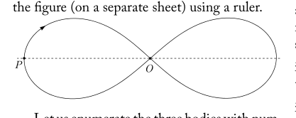
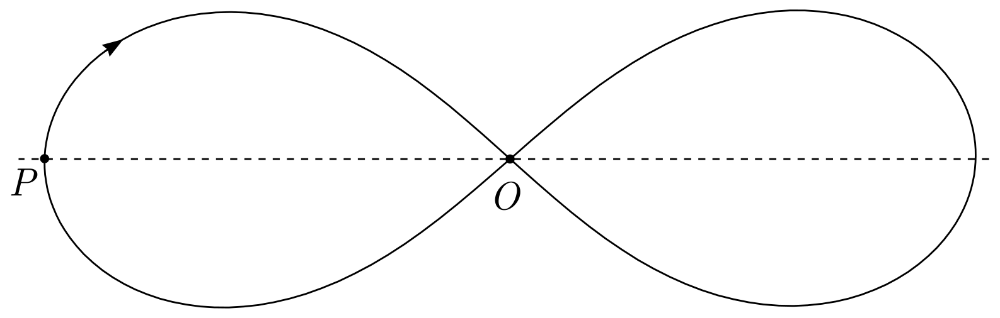
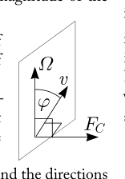
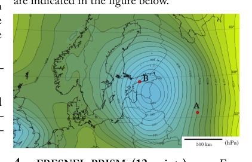
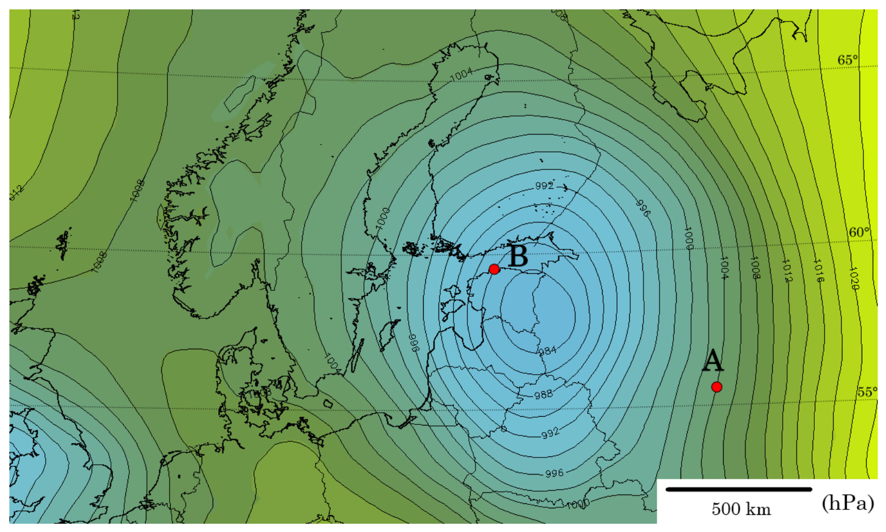
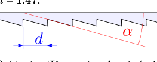
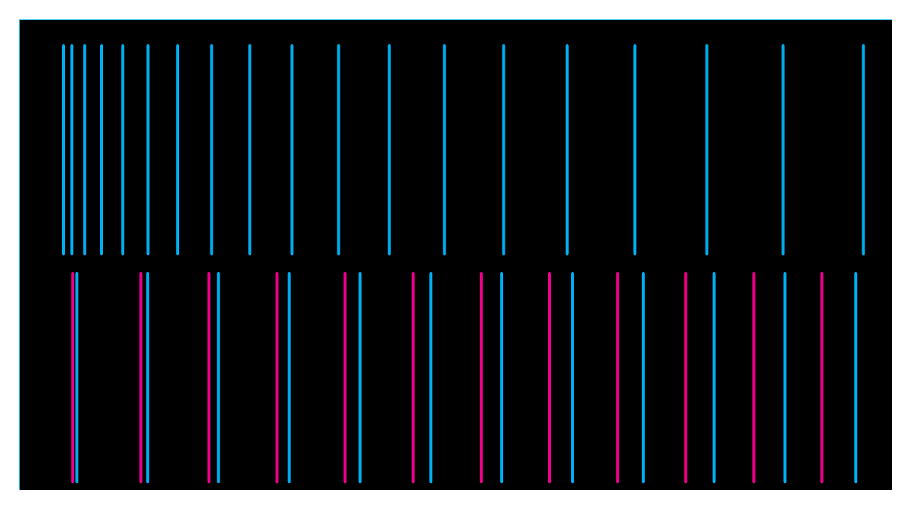
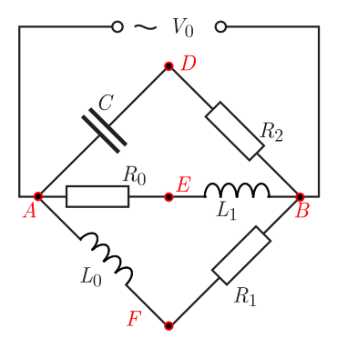

- GRAVITATIONAL RACING (11 points) — Maté Vigh and Jaan Kalda. While in generic case, the dynamics of three gravitationally interacting bodies is complicated and chaotic, there are special cases when the dynamics is regular. In particular, there are cases when bodies perform periodic motion. The simplest case of such periodic motion is when all three bodies, positioned at the vertices of an equilateral triangle, rotate as a rigid body. In what follows we consider a more complicated periodic motion. Relatively recently , it was discovered that three equal point masses can move periodically along a common 8-shaped trajectory shown in the figure (arrow denotes the direction of motion). This figure is based on a computer simulation and has a correct shape. If needed, you can measure distances from the enlarged version of the figure (on a separate sheet) using a ruler. Let us enumerate the three bodies with numbers 1, 2, and 3, according to the order in which they pass the leftmost point shown in the figure. Let and denote the positions of the bodies 2 and 3, respectively at that moment when the body 1 is passing the middle point . Similarly, let and denote the positions of the bodies 2 and 3, respectively at that moment when the body 1 is passing the leftmost point . Let denote the full period of motion of each of the bodies along this 8-shaped trajectory. i) (2 points) Express the following travel times for one of the bodies: (a) from to ; (b) from to . ii) (1 point) Let , , and denote the velocities of the three bodies at a certain moment of time. Write down an equality relating these three vectors to each other. iii) (2 points) Prove that the total angular momentum of this system is zero. iv) (2 points) Construct the positions of the points and (use the figure on the separate sheet). Motivate your construction. v) (2 points) Construct the positions of the points and (use the figure on the separate sheet). Find two independent ways of construction and motivate your methods. vi) (2 points) Find the ratio of the speed of the bodies at point to the speed at point .

traiettoria a forma di 8 tre masse
traiettoria a forma di 8 ingrandita punti P OTopic: Gravitation, Rotational Dynamics, Conservation of Momentum Metodi: Newton’s Law of Gravitation, Torque & Angular Momentum Analysis, Conservation Laws, Symmetry Argument Competenze: Diagrammatic Reasoning, Mathematical Modeling, Physical Reasoning Objects: — Fonte: Testo (PDF) — p.1
- RACING GRAVITATORIO (11 punti) Maté Vigh e Jaan Kalda. Mentre in generica In questo caso, la dinamica di tre corpi gravitazionalmente interagiscono è complicata e caotica, sono casi speciali quando la dinamica è regolare. In particolare, ci sono casi in cui i corpi svolgono movimenti periodici. Il caso più semplice di questo tipo Il movimento periodico è quando tutti e tre i corpi, posizionati alle vertici di un triangolo equilaterale, ruotare come un corpo rigido. In questo caso, si tratta di un movimento periodico più complicato. Relatively recently , it was discovered that tre masse di punti uguali possono muoversi periodicamente lungo una trajectoria comune a 8 forme mostrata in la figura (la freccia indica la direzione del movimento). Questa figura si basa su una simulazione informatica e ha una forma corretta. Se necessario, puoi misura le distanze dalla versione allargata di la figura (su un foglio separato) con una regola. Enumeriamo i tre corpi con i numeri 1, 2 e 3, in base all’ordine in cui passano il punto più sinistro indicato nella figura. e indichino le posizioni di i corpi 2 e 3, rispettivamente, in quel momento quando il corpo 1 passa il punto medio . Allo stesso modo, e indichino le posizioni di i corpi 2 e 3, rispettivamente, in quel momento quando il corpo 1 passa il punto più sinistro . indichi l’intero periodo di movimento di ciascuna di corpi lungo questa traiettoria a 8 forme. i) (2 punti) Indicare i seguenti tempi di viaggio per uno degli organismi: a) da a ; b) da to . ii) (1 punto) , e indichino le velocità dei tre corpi in un certo momento
- Non è tempo. Scrivi una parità che li riguardi tre vettori l’uno all’altro. iii) (2 punti) Prove che la dinamica angolare totale di questo sistema è zero. Il programma di ricerca e di ricerca I punti e (utilizza la figura riportata sul separato
- la foglia). Motiva la tua costruzione. V) (2 punti) Costruire le posizioni dei punti e (utilizza la figura riportata sul foglio separato). Trovare due modi indipendenti di costruzione e motivare i tuoi metodi. (vi) (2 punti) Trovare il rapporto della velocità del corpi al punto alla velocità al punto .
traiettoria a forma di 8 tre masse
*traiettoria a forma di 8 ingrandita punti P O *
Topic: Gravitation, Rotational Dynamics, Conservation of Momentum Metodi: Newton’s Law of Gravitation, Torque & Angular Momentum Analysis, Conservation Laws, Symmetry Argument Competenze: Diagrammatic Reasoning, Mathematical Modeling, Physical Reasoning Objects: — Fonte: Testo (PDF) — p.1
- SPEED CAMERA (6 points) — Mihkel Kree. In this problem, we analyse the working principle of a speed camera. The transmitter of the speed camera emits an electomagnetic wave of frequency having waveform . The wave gets reflected from an approaching car moving with speed . The reflected wave is recorded by the receiver of the speed camera. i) (2 points) Express the freqency of the reflected wave. ii) (2 points) In the speed camera, the received waveform is multiplied with the original emitted waveform. Express all the frequency components present in the multiplied signal. iii) (2 points) Given the lowest frequency component present in the multiplied signal, calculate the speed of the car . Note: the speed of light m/s and the following trigonometric identity might turn to be useful:
Topic: Oscillations & Waves, Electromagnetism, Special Relativity Metodi: Wave Equation, Superposition Principle, Approximation & Series Expansion Competenze: Mathematical Modeling, Physical Reasoning Objects: — Fonte: Testo (PDF) — p.1
- CAMERA SPEED (6 punti) Mihkel
- Cree. In questo problema analizziamo il principio di funzionamento di una telecamera a velocità. Il trasmettitore della telecamera di velocità emette un elettromagnetico onde di frequenza con forma d’onda . L’onda si riflette da un’auto in avvicinamento che si muove a velocità . Il l’onda riflessa viene registrata dal ricevitore del
- Una telecamera veloce. i) (2 punti) Esprimere la frequenza dell’onda riflessa. (ii) (2 punti) Nella telecamera veloce, il la forma d’onda è moltiplicata con la forma d’onda emessa originariamente. Esprimere tutti i componenti di frequenza presenti nel segnale moltiplicato. iii) (2 punti) Data la componente di frequenza più bassa presente nel moltiplicato segnale, calcolare la velocità della vettura . Nota: il la velocità di luce m/s e la seguente identità trigonometrica potrebbero rivelarsi utili:
Topic: Oscillations & Waves, Electromagnetism, Special Relativity Metodi: Wave Equation, Superposition Principle, Approximation & Series Expansion Competenze: Mathematical Modeling, Physical Reasoning Objects: — Fonte: Testo (PDF) — p.1
- WEATHER FORECAST (7 points) — Johan Runeson. The map shown on a separate page shows isobars at a constant height close to sea level. You may assume that the pattern of isobars is stationary in time (changes very slowly). i) (2 points) Sketch the direction of the wind velocity at the points A and B. ii) (2.5 points) Estimate the magnitude of the wind velocity at point A. Make use of the fact that at point A, the lines of constant pressure are almost straight. The density of air near the ground . iii) (2.5 points) Estimate the magnitude of the wind velocity at point B. Hint. When an object of mass (for example a slab of air) is moving with velocity in a frame of reference rotating with angular velocity , it feels a fictitious force called the Coriolis force given by , where the angle and the directions are indicated in the figure below.

diagramma forza di Coriolis velocità angolare
mappa isobare pressione atmosferica punti A B
mappa isobare fogli separato punti A BTopic: Fluid Mechanics, Newtonian Mechanics, Rotational Dynamics Metodi: Free-Body Diagram, Hydrostatic Equilibrium, Dimensional Analysis Competenze: Estimation & Approximation, Physical Reasoning, Diagrammatic Reasoning Objects: — Fonte: Testo (PDF) — p.1
- Previsione del tempo (7 punti) Johan
- Runeson. La mappa mostrata su una pagina separata mostra isobari ad un’altezza costante vicino al mare
- Il livello. Si può presumere che il modello degli isobari sia stazionario nel tempo (cambia molto lentamente). i) (2 punti) Segnare la direzione della velocità del vento nei punti A e B. (ii) (2,5 punti) Estimare l’entità della velocità del vento al punto A. Sfruttate il fatto che al punto A, le linee di pressione costante Sono quasi etero. La densità dell’aria nei pressi del terra . iii) (2,5 punti) Estimare l’entità della velocità del vento al punto B.
- Un suggerimento. Quando un oggetto di massa (ad esempio una lastra di aria) si muove con velocità in un quadro di riferimento che ruota con velocità angolare , sente una forza fittizia chiamata Forza di Coriolis data da , where the angle e le indicazioni sono indicati nella figura seguente.
diagrafo forza di velocità angolare di Coriolis
- mappa isobare pressione atmosferica punti A B *
*mappa isobare fogli separato punti A B *
Topic: Fluid Mechanics, Newtonian Mechanics, Rotational Dynamics Metodi: Free-Body Diagram, Hydrostatic Equilibrium, Dimensional Analysis Competenze: Estimation & Approximation, Physical Reasoning, Diagrammatic Reasoning Objects: — Fonte: Testo (PDF) — p.1
- FRESNEL PRISM (12 points) — Eero Uustalu and Jaan Kalda. Equipment: a sheet of Fresnel prism, a sheet with purple and magenta stripes (see separate sheet), a piece of cardboard paper (can be used as a screen), ruler, measuring tape, stand, green laser . NB! Avoid looking into direct or reflected laser light, it my damage your eyes! The intensity maximum for the scattered light from magenta stripes is , and from cyan stripes — . Fresnel prism is a transparent sheet with a periodic array of stripes; cross-section of such a sheet is shown in figure. The refraction index of the material from which the sheet is made . i) (4 points) Determine the pitch of the Fresnel prism (see figure for the definition of the pitch). ii) (4 points) Determine the angle of the prism. iii) (4 points) Assuming that in the range of visible light, the refraction index of the Fresnel prism material is a linear function of wavelength , determine the chromatic dispersion . Cristopher Moore, Phys. Rev. Lett. 70, 3675 (1993)

sezione prisma di Fresnel passo d
strisce prisma di Fresnel ciano e magentaTopic: Wave Optics, Geometric Optics Metodi: Interference & Diffraction Analysis, Snell’s Law, Graph Linearization Competenze: Experimental Data Analysis, Mathematical Modeling, Physical Reasoning Objects: Prism, Screen Fonte: Testo (PDF) — p.1
- FESNEL PRISM (12 punti) Eero Uustalu e Jaan Kalda. Apparecchiature: una foglia di Fresnel prisma, lamiera con magenta e viola strisce (vedi foglio separato), un pezzo di cartone carta (può essere utilizzata come schermo), regolare, nastro di misura, supporto, laser verde . NB! Evita di guardare la luce laser diretta o riflessa,
- Ti danneggia gli occhi! L’intensità massima Perché la luce dispersa dalle strisce magenta è , e dalle strisce di cianeno n = 1.47d\alphan = n(\lambda)\lambda\dfrac{dn}{d\lambda}^1$Cristopher Moore, Phys. Il reverendo. Lett. 70, 3675 (1993)
*sezione prisma di Fresnel passo d *
risce prisma di Fresnel ciano e magenta
Topic: Wave Optics, Geometric Optics Metodi: Interference & Diffraction Analysis, Snell’s Law, Graph Linearization Competenze: Experimental Data Analysis, Mathematical Modeling, Physical Reasoning Objects: Prism, Screen Fonte: Testo (PDF) — p.1
- MAGNETIC BILLIARD (9 points) — Jaan Kalda. Consider two absolutely elastic dielectric balls of radius and mass one of which carries isotropically distributed charge , and the other — . There is so strong homogeneous magnetic field , parallel to the axis , that electrostatic interaction of the two charges can be neglected; neglect also gravity and friction forces. The first ball (negatively charged) moves with speed and collides with the second ball which had been resting at the origin. The collision is central, and immediately before the impact, the velocity of the first ball was parallel to the -axis. i) (1 point) What is the speed of the second ball immediately after the collision? ii) (2 points) Sketch the trajectories of the centres of the both balls during the subsequent motion. iii) (3 points) What is the average velocity (magnitude and direction) of the balls during their subsequent motion? iv) (3 points) Consider the same situation as before, except that the there are three differences in the assumptions: the both balls have now identical positive charge ; electrostatic repulsion between the balls is no longer negligible; the collision is not necessarily central (but the balls move still at the same value of so that the collision will not induce any motion in the direction of the -axis). Let denote the point where the surfaces of the two balls are in contact during the -th collision. What is the maximal distance between and (maximize over all the values , and over all the impact parameters of the collisions for fixed values of , , and )?
Topic: Magnetism, Conservation of Momentum, Newtonian Mechanics Metodi: Lorentz Force Analysis, Conservation of Momentum, Conservation of Energy Competenze: Diagrammatic Reasoning, Mathematical Modeling, Physical Reasoning Objects: Ball Fonte: Testo (PDF) — p.2
- Magnetico biliardo (9 punti) Jaan Calda, non è così. Considerate due sfere dielettriche assolutamente elastiche di raggio e massa una delle quali porta carica isotropicamente distribuita , e l’altro . C’è un campo magnetico omogeneo così forte , parallelo all’asse , che l’interazione elettrostatica delle due cariche può non si può fare attenzione alla gravità e alla frizione
- Le forze. La prima palla (cargata negativamente) si muove con velocità e colpisce la seconda palla che si trovava all’origine. La collisione è centrale e subito prima dell’impatto, la velocità della prima palla era parallela a l’asse . i) (1 punto) Qual è la velocità della seconda palla immediatamente dopo l’incidente? ii) (2 punti) Sineografia delle traiettorie dei centri di entrambe le palle durante il successivo movimento. iii) (3 punti) Qual è la velocità media (magnitude e direzione) delle palle durante la loro
- la mozione successiva?
- (3 punti) Considerare la stessa situazione precedente, tranne che le tre differenze in le ipotesi: entrambe le palle hanno ora la carica positiva identica ; la repulsione elettrostatica tra le palle non è più trascurabile; La collisione non è necessariamente centrale (ma la collisione è le palle si muovono ancora allo stesso valore di in modo che la collisione non indurrà alcun movimento nella direzione dell’asse ). indichi il punto quando le superfici delle due palle sono in contatto durante la collisione -th. Qual è il massimo Distanza tra e (massimo su tutti) i valori e su tutto l’impatto parametri delle collisioni per valori fissi di , e )?
Topic: Magnetism, Conservation of Momentum, Newtonian Mechanics Metodi: Lorentz Force Analysis, Conservation of Momentum, Conservation of Energy Competenze: Diagrammatic Reasoning, Mathematical Modeling, Physical Reasoning Objects: Ball Fonte: Testo (PDF) — p.2
- CUBE (5 points) — Taavet Kalda. A laser pointer of power is directed at a glass cube. The refractive index of the cube is . The surface of the cube has anti-reflective coating so that there is no partial reflection when light travels from one medium to the other. The speed of light is . i) (3 points) What is the maximum force by which the laser pointer can push the cube if the laser needs to be kept parallel to one of the faces of the cube (this means that the laser beam can propagate only in a two-dimensional plane)? ii) (2 points) What is the maximum force by which the laser pointer can push the cube if the orientation of the laser can be arbitrary?
Topic: Geometric Optics, Electromagnetism Metodi: Snell’s Law, Physical Modeling, Vector Decomposition Competenze: Physical Reasoning, Mathematical Modeling Objects: — Fonte: Testo (PDF) — p.2
- CUBE (5 punti) Taavet Kalda. Un laser il puntatore di potenza è rivolto a un cubo di vetro. L’indice di rifrazione del cubo è . La superficie di cui al punto 1.6.2.3.3.3 del cubo ha un rivestimento antiriflessivo in modo che non c’è riflessione parziale quando la luce viaggia da un mezzo all’altro. La velocità di la luce è . i) (3 punti) Qual è la forza massima di che il puntatore laser può spingere il cubo se il il laser deve essere mantenuto parallelo ad una delle facce di cubo (questo significa che il raggio laser può si propaga solo in un piano bidimensionale)? (ii) (2 punti) Qual è la forza massima di che il puntatore laser può spingere il cubo se il l’orientamento del laser può essere arbitrario?
Topic: Geometric Optics, Electromagnetism Metodi: Snell’s Law, Physical Modeling, Vector Decomposition Competenze: Physical Reasoning, Mathematical Modeling Objects: — Fonte: Testo (PDF) — p.2
- LCR-CIRCUIT (5 points) — Jaan Kalda. Consider the circuit shown in the figure. i) (2 points) Draw a phasor diagram for this circuit showing the voltage vectors between the following nodes: , , , , , , and . ii) (3 points) The voltages between the nodes D, E, and F are know to have the following values: , , and ; what is the value of the input voltage ?

circuito LCR con generatore e resistoriTopic: Circuits, Oscillations & Waves Metodi: Kirchhoff’s Laws, Superposition Principle Competenze: Diagrammatic Reasoning, Mathematical Modeling Objects: Resistor, Inductor, Capacitor Fonte: Testo (PDF) — p.2
- LCR-CIRCUTO (5 punti) Jaan Kalda. Considerate il circuito mostrato nella figura. i) (2 punti) Disegnare un diagramma di fasore per questo circuito che mostra i vettori di tensione tra i seguenti nodi: , , , , , , e . ii) (3 punti) Le tensioni tra i nodi D, E e F sono noti per avere i seguenti valori: , e ; cosa il valore della tensione di ingresso è ?
*circuito LCR con generatore e resistori *
Topic: Circuits, Oscillations & Waves Metodi: Kirchhoff’s Laws, Superposition Principle Competenze: Diagrammatic Reasoning, Mathematical Modeling Objects: Resistor, Inductor, Capacitor Fonte: Testo (PDF) — p.2
- AIR IN A SUBMARINE (6 points) — Johan Runeson, Jaan Kalda. A submarine of unknown nationality is travelling near the bottom of the Baltic sea, at the depth of . Its interior is one big room of volume filled with air () at pressure and temperature . Suddenly it hits a rock and a large hole of area is formed at the bottom of the submarine. As a result, the submarine sinks to the bottom and most of it is filled fast with water, leaving a bubble of air at increased pressure (no air escapes the submarine). The density of water and free fall acceleration . Molar heat capacitance of air by constant volume , where is the gas constant. i) (2 points) What is the volume rate (/s) at which the water flows into the submarine immediately after the formation of the hole? ii) (2 points) The flow rate is so large that the submarine is filled with water so fast that the heat exchange between the gas and the water can be neglected (this applies also to the next question). What is the volume of the air bubble once water flow has stopped? iii) (2 points) The water stream rushing into the submarine creates turbulent water inside the submarine; what is the total kinetic energy of this water turbulence (which later ends up being dissipated as heat), once the inflow has stopped due to equalized pressures?
Topic: Fluid Mechanics, Thermodynamics, Conservation of Energy Metodi: Bernoulli’s Equation, First Law of Thermodynamics, Energy Conservation Method Competenze: Physical Reasoning, Mathematical Modeling, Estimation & Approximation Objects: Gas, Bubble Fonte: Testo (PDF) — p.2
- AIR IN A SUBMARINE (6 punti) Johan Runeson, Jaan Kalda. Un sottomarino di sconosciuti La cittadinanza si sta spostando vicino alla parte inferiore del Mar Baltico, a profondità . Il suo interno è una grande stanza di volume piena di aria () a pressione e temperatura . Improvvisamente colpisce una roccia e si forma un grande buco di superficie al il fondo del sottomarino. Di conseguenza, il Il sottomarino affonda al fondo e la maggior parte è riempito rapidamente di acqua, lasciando una bolla d’aria a pressione aumentata (nessun aria sfugge dal sottomarino). La densità dell’acqua e accelerazione di caduta libera . Calore molare capacità dell’aria a volume costante , dove è la costante del gas. (i) (2 punti) Qual è il volume (/s) al che l’acqua scorre nel sottomarino subito dopo la formazione del buco? (ii) (2 punti) Il flusso è così elevato che il sottomarino si riempie di acqua così velocemente che il calore di Il gas e l’acqua possono essere scambiati La Commissione ha adottato una decisione che non è stata adottata. Qual è il volume della bolla d’aria una volta acqua Il flusso si è fermato? (iii) (2 punti) Il flusso d’acqua che si precipita in il sottomarino crea acqua turbolenta all’interno del Submarino; qual è l’energia cinetica totale di La turbolenza dell’acqua (che poi finisce per essere di calore), una volta che l’afflusso si è fermato
- per le pressioni eguali?
Topic: Fluid Mechanics, Thermodynamics, Conservation of Energy Metodi: Bernoulli’s Equation, First Law of Thermodynamics, Energy Conservation Method Competenze: Physical Reasoning, Mathematical Modeling, Estimation & Approximation Objects: Gas, Bubble Fonte: Testo (PDF) — p.2
- BLACK BOX (?? 1point) — Jaan Kalda, Mihkel Heidelberg. The black box has three terminal wires: “blue”, “black” and “white”, and contains in a star configuration: a battery, a capacitor, an inductor in series with a diode. You may consider the diode to be ”ideal” — it conducts current perfectly one way and not at all the other way. You may neglect internal resistance of the battery and capacitor, but the inductor has considerable internal resistance. The multimeter’s internal resistance when measuring voltages is and it displays a new reading every . i) (3 points) Draw the electrical circuit that is inside the black box. Motivate your solution with measurements. ii) (1 point) Determine the electromotive force of the battery. iii) (1 point) Determine the internal resistance of the inductor. iv) (3 points) Estimate the value of the capacitance . v) (3 points) Estimate the value of the inductance . Equipment: Black box, multimeter, stopwatch.
Topic: Circuits, Electromagnetism Metodi: Kirchhoff’s Laws, Experimental Data Analysis, Physical Modeling Competenze: Experimental Data Analysis, Estimation & Approximation, Measurement & Instrumentation Objects: Battery, Capacitor, Inductor, Wire Fonte: Testo (PDF) — p.2
- Cassa nera (??) 1 punto) Jaan Kalda, Mihkel Heidelberg. La scatola nera ha tre terminali. fili: blu, nero e bianco e contiene in configurazione a stelle: batteria, condensatore, un induttore in serie con diodo. Potresti considerare il diodo come ideal conduce il corrente perfettamente in una direzione e non l’altra affatto
- Bene, così. Si può trascurare la resistenza interna la batteria e il condensatore, ma l’induttore ha una resistenza interna notevole. I multimetro resistenza interna quando si misura la tensione e mostra una nuova lettura ogni . i) (3 punti) Disegnare il circuito elettrico che è all’interno della scatola nera. Motivare la soluzione con misurazioni. ii) (1 punto) Determinare la forza elettromotrice della batteria. iii) (1 punto) Determinare la resistenza interna di l’induttore. iv) (3 punti) Valutare il valore della capacità . V) (3 punti) Valorizzare il valore dell’inductanza . Equipaggiamento: Scatola nera, multimetro, orologio fermo.
Topic: Circuits, Electromagnetism Metodi: Kirchhoff’s Laws, Experimental Data Analysis, Physical Modeling Competenze: Experimental Data Analysis, Estimation & Approximation, Measurement & Instrumentation Objects: Battery, Capacitor, Inductor, Wire Fonte: Testo (PDF) — p.2